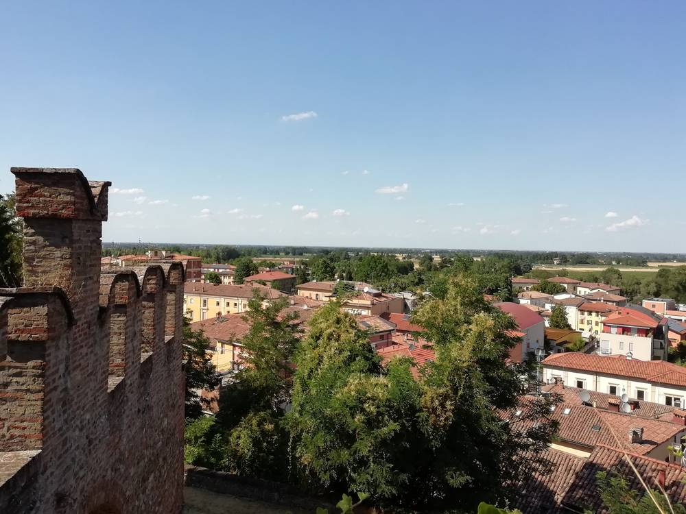

이탈리아 발사모자 재생에너지 공동체, 25가구 '공동구매'로 태양광·히트펌프 함께 설치…EU 집행위 "본받을 시범 사례"

시민·소상공인 102명 협동조합, 2024년 출범 뒤 태양광 200kW 넘게 설치…자원봉사자 집집마다 찾아가 설명회 4번에 75명
이탈리아 에밀리아로마냐주 볼로냐 근교 발사모자의 재생에너지 공동체(CER)가 주민 25가구를 묶어 태양광과 히트펌프, 창호를 함께 사들이는 공동구매를 꾸렸다. 계획대로라면 16가구에 태양광, 9가구에 히트펌프, 7가구에 새 창호, 10가구에 냉방 설비가 들어가며 공사는 2026년 말에서 2027년 초 사이에 시작된다. 2024년 6월 문을 연 이 공동체는 시민과 소상공인 102명이 조합원인 협동조합으로, 인구 3만여 명의 지역에서 이미 태양광 200kW 이상을 설치해 전기를 함께 나눠 쓰고 있다. 공동체는 올해 5월 지역 에너지기관과 함께 공동구매를 시작해 설치업체를 공개 모집하고 가구별로 기술 상담과 현장 점검을 해 주었으며, 여름 동안 자원봉사자들이 상점과 카페에 전단을 돌리고 집집마다 문을 두드려 네 차례 설명회에 75명을 모았다. EU 집행위원회는 10일 이 사례를 다른 지역이 본받을 만한 시범 사업으로 소개했다. 실제 절감액은 최종 비용이 정해지고 공사가 끝나야 나온다.
시민에너지 관점
조합원 102명, 태양광 200kW의 작은 공동체가 25가구의 설비 공동구매까지 맡은 것은 에너지 공동체가 발전소를 넘어 집집의 에너지 전환을 이끄는 창구가 될 수 있음을 보여 준다. 혼자서는 업체 고르기와 견적 비교, 보조금 서류에서 막히던 가구가 함께 나서면 값을 낮추고 믿을 만한 시공을 고를 수 있다. "작은 공동체가 무엇을 바꾸겠느냐"는 의문에는 전단과 방문으로 75명을 모은 발로 뛰는 조직력이 답이다. 우리 햇빛소득마을과 에너지협동조합도 마을 발전소와 함께 지붕 태양광·히트펌프·단열을 묶어 사는 공동구매를 사업으로 키우고, 지자체는 상담과 공개 모집을 뒷받침해야 한다.
출처: greenMe 2026-11-11 Ilaria Rosella Pagliaro 원문 보기
イタリア・ヴァルサモッジャの再エネ共同体、25世帯の「共同購入」で太陽光・ヒートポンプを一緒に設置…欧州委「手本となるパイロット事例」
市民・小規模事業者102人の協同組合、2024年発足後に太陽光200kW超を設置…ボランティアが戸別訪問、説明会4回に75人
イタリア・エミリア＝ロマーニャ州ボローニャ近郊ヴァルサモッジャの再生可能エネルギー共同体（CER）が、住民25世帯をまとめて太陽光やヒートポンプ、窓を一緒に購入する共同購入を組んだ。計画では16世帯に太陽光、9世帯にヒートポンプ、7世帯に新しい窓、10世帯に冷房設備が入り、工事は2026年末から2027年初めにかけて始まる。2024年6月に発足したこの共同体は市民と小規模事業者102人が組合員の協同組合で、人口3万人余りの地域ですでに太陽光200kW以上を設置し、電気を分かち合っている。共同体は今年5月に地域のエネルギー機関と共同購入を始め、施工業者を公募し、世帯ごとに技術相談と現地確認を行ったほか、夏の間にはボランティアが商店やカフェにチラシを配り、一軒一軒戸をたたいて4回の説明会に75人を集めた。欧州委員会は10日、この事例を他地域が手本にできるパイロット事業として紹介した。実際の節約額は最終費用が決まり、工事が終わってから明らかになる。
市民エネルギーの視点
組合員102人、太陽光200kWの小さな共同体が25世帯の設備共同購入まで担ったことは、エネルギー共同体が発電所を超えて各家庭のエネルギー転換を導く窓口になりうることを示している。一人では業者選びや見積もり比較、補助金書類でつまずく世帯も、一緒に動けば価格を下げ、信頼できる施工を選べる。「小さな共同体に何が変えられるのか」という疑問には、チラシと戸別訪問で75人を集めた足で稼ぐ組織力が答えだ。韓国の「日差し所得村」やエネルギー協同組合も、村の発電所とともに屋根上太陽光・ヒートポンプ・断熱をまとめて買う共同購入を事業として育て、自治体は相談と公募を後押しすべきだ。
出典: greenMe 2026-11-11 Ilaria Rosella Pagliaro 原文を読む
意大利瓦尔萨莫贾可再生能源社区组织25户"团购"共同安装光伏和热泵…欧盟委员会："值得借鉴的试点案例"
由102名市民和小商户组成的合作社，2024年成立后已安装光伏200kW以上…志愿者挨家挨户上门，4场说明会吸引75人
意大利艾米利亚-罗马涅大区博洛尼亚近郊瓦尔萨莫贾的可再生能源社区（CER）把25户居民组织起来，团购光伏、热泵和门窗。按照计划，16户将安装光伏，9户安装热泵，7户更换新门窗，10户安装制冷设备，工程将于2026年底至2027年初之间启动。该社区于2024年6月成立，是由102名市民和小商户组成的合作社，在这个3万多人口的地区已安装200kW以上光伏，共同分享电力。社区今年5月与当地能源机构一起启动团购，公开招募安装企业，并为每户提供技术咨询和上门勘查；夏天，志愿者们在商店和咖啡馆发放传单、挨家挨户敲门，4场说明会共吸引75人参加。欧盟委员会10日把这一做法作为其他地区可借鉴的试点项目进行了介绍。实际节省多少，要等最终费用确定、工程完工后才能知道。
市民能源视角
一个只有102名成员、200kW光伏的小社区承担起25户的设备团购，说明能源社区可以超越电站，成为带动家家户户能源转型的窗口。单独一户常常卡在选企业、比报价和补贴材料上，一起行动就能压低价格、选到可靠的施工方。对于"小社区能改变什么"的疑问，用传单和上门拜访聚集75人的扎实组织力就是答案。韩国的"阳光收入村"和能源合作社也应把屋顶光伏、热泵、保温打包团购发展为业务，与村级电站并行，地方政府则应在咨询和公开招募上给予支持。
来源: greenMe 2026-11-11 Ilaria Rosella Pagliaro 查看原文
Italy's Valsamoggia Energy Community Organizes Group Purchase for 25 Households to Install Solar and Heat Pumps Together; European Commission Cites It as a Pilot Worth Following
Cooperative of 102 residents and small businesses has installed more than 200kW of solar since launching in 2024; volunteers went door to door, drawing 75 people to four meetings
The renewable energy community (CER) of Valsamoggia, near Bologna in Italy's Emilia-Romagna region, has brought 25 households together in a group purchase of solar panels, heat pumps and windows. Under the plan, 16 homes will get solar, nine heat pumps, seven new windows and 10 cooling systems, with work due to start between late 2026 and early 2027. Launched in June 2024, the community is a cooperative of 102 members, residents and small businesses, and has already installed more than 200kW of solar in an area of over 30,000 people to share power locally. It started the group purchase in May with a regional energy agency, issued a public call for installers and offered each household technical advice and site visits, while over the summer volunteers handed out flyers in shops and cafés and knocked on doors, drawing 75 people to four public meetings. The European Commission presented the initiative on Nov. 10 as a pilot project other areas could learn from. Actual savings will only be known once final costs are set and the work is done.
Citizen Energy View
That a small community with 102 members and 200kW of solar has taken on a group purchase for 25 households shows energy communities can go beyond power plants to become the gateway for each home's energy transition. Households that stall alone on choosing installers, comparing quotes and filing subsidy paperwork can lower prices and find reliable contractors by acting together. To those who ask what a small community can change, the answer is the legwork of flyers and door-knocking that brought in 75 people. Korea's Sunlight Income Villages and energy cooperatives should build group purchases of rooftop solar, heat pumps and insulation into their business alongside village power plants, and local governments should back them with advice and public calls for installers.
Source: greenMe 2026-11-11 Ilaria Rosella Pagliaro Read the original